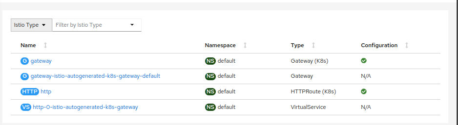
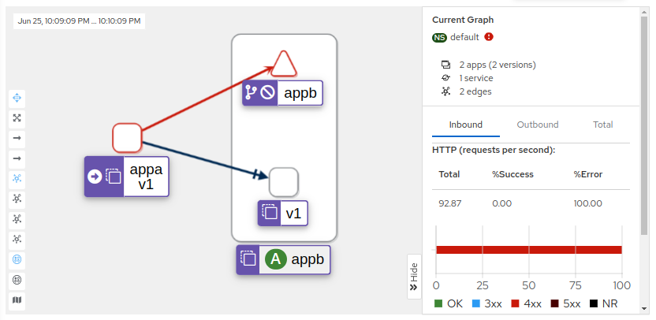

In this post I will discourse about the new Istio Service Mesh architecture, without sidecar, the problem is solved with a very interesting approach a deep diving in these pieces can help out understand the underlying connections and design of each component and inner workings.
All the code is stored here as magefile target, PR are welcomed.
The following architecture defines this example, having 2 services, appA and appB,
where appB will be accessed from both the Gateway API and from appA. A Waypoint is added
with appB service account, and ztunnel is reponsible to handle all the Layer 4 traffic.
Istio-CNI component (daemonset) running on each Kubernetes worker node is responsible for redirecting application traffic to the zero-trust tunnel (ztunnel).
The first step is to install Kind and Istio on it, targets install the available addons as well (prometheus, grafana, jaeger, kiali). It’s required to increase fs.inotify parameters in the kernel on Kind, otherwise the waypoint wont come up. The steps are documented as follows:
$ INSTALL_KIND=y mage sm:install
The following steps are codified automatically in the sm:install target, and work for
documentation propose.
$ kind create cluster --name ambient --config tutorial-istio-sec/3-istio-gw/specs/kind.yaml
$ docker exec ambient-worker2 sysctl -w fs.inotify.max_user_instances=1024
$ docker exec ambient-worker2 sysctl -w fs.inotify.max_user_watches=1048576
$ docker exec ambient-control-plane sysctl -w fs.inotify.max_user_instances=1024
$ docker exec ambient-control-plane sysctl -w fs.inotify.max_user_watches=1048576
$ docker exec ambient-worker sysctl -w fs.inotify.max_user_instances=1024
$ docker exec ambient-worker sysctl -w fs.inotify.max_user_watches=1048576
The target install MetalLB for Gateway API access.
$ kubectl apply -f https://raw.githubusercontent.com/metallb/metallb/v0.13.10/config/manifests/metallb-native.yaml
$ kubectl apply -f tutorial-istio-sec/3-istio-gw/specs/metallb_cr.yaml
ipaddresspool.metallb.io/docker created
l2advertisement.metallb.io/empty created
Install Gateway API CRDs:
$ kubectl kustomize github.com/kubernetes-sigs/gateway-api/config/crd?ref=v0.6.2 -o /tmp/kustomized
$ kubectl apply -f /tmp/kustomized
customresourcedefinition.apiextensions.k8s.io/gatewayclasses.gateway.networking.k8s.io created
customresourcedefinition.apiextensions.k8s.io/gateways.gateway.networking.k8s.io created
customresourcedefinition.apiextensions.k8s.io/httproutes.gateway.networking.k8s.io created
Finally setup Istio ambient mode with debug flag enabled
$ istioctl install -y --set values.global.proxy.logLevel=debug -f tutorial-istio-sec/3-istio-gw/specs/istio.yaml
$ kubectl label namespace default istio.io/dataplane-mode=ambient
namespace/default labeled
As a last step install the otel addons
$ kubectl apply -f tutorial-istio-sec/3-istio-gw/specs/otel
The application with appA and appB are common httpbin Dockerfile.

$ kubectl apply -n default -f tutorial-istio-sec/3-istio-gw/specs/apps
serviceaccount/appa created
service/appa created
deployment.apps/appa created
serviceaccount/appb created
service/appb created
deployment.apps/appb created
Create a new global Gateway API and HTTP Route:
apiVersion: gateway.networking.k8s.io/v1beta1
kind: Gateway
metadata:
name: gateway
namespace: default
spec:
gatewayClassName: istio
listeners:
- name: default
hostname: "*.opssec.in"
port: 80
protocol: HTTP
allowedRoutes:
namespaces:
from: All
---
apiVersion: gateway.networking.k8s.io/v1beta1
kind: HTTPRoute
metadata:
name: http
namespace: default
spec:
parentRefs:
- name: gateway
hostnames: ["appb.opssec.in"]
rules:
- matches:
- path:
type: PathPrefix
value: /
backendRefs:
- name: appb
port: 8000
Apply the waypoint configuration only for the appB service account.
$ istioctl x -n default waypoint apply --service-account appb
Test the proxy-config listener configuration for and route.
$ istioctl proxy-config listener deploy/gateway-istio
ADDRESS PORT MATCH DESTINATION
0 ALL Cluster: connect_originate
0.0.0.0 80 ALL Route: http.80
0.0.0.0 15021 ALL Inline Route: /healthz/ready*
0.0.0.0 15090 ALL Inline Route: /stats/prometheus*
$ istioctl proxy-config route deploy/gateway-istio
NAME VHOST NAME DOMAINS MATCH VIRTUAL SERVICE
http.80 appb.apifloripa.com.br:80 appb.opssec.in /* http-0-istio-autogenerated-k8s-gateway.default
backend * /stats/prometheus*
backend * /healthz/ready*
Looking on Kiali IstioConfig it will be possible to see a few objects, converted as VirtualService and Istio Gateway autogenerated. The other option is to remove the Gateway from ambient and point to services inside of it.

Create a new VirtualService adding a delay of 2s for .5 percent in the traffic.
apiVersion: networking.istio.io/v1beta1
kind: VirtualService
metadata:
name: appb
spec:
hosts:
- appb
http:
- fault:
delay:
percentage:
value: 50.0
fixedDelay: 2s
match:
- uri:
prefix: "/headers"
route:
- destination:
host: appb
- route:
- destination:
host: appb
Start requesting appb from appA and observe the latency introduced on half of
the requests.
$ while true; do curl http://appb:8000/headers -s -o /dev/null -w "%{http_code}\n"; date; done
200 Mon Jun 26 01:01:38 UTC 2023
200 Mon Jun 26 01:01:40 UTC 2023
200 Mon Jun 26 01:01:42 UTC 2023
200 Mon Jun 26 01:01:42 UTC 2023
200 Mon Jun 26 01:01:44 UTC 2023
200 Mon Jun 26 01:01:44 UTC 2023
...
200 Mon Jun 26 01:02:01 UTC 2023
200 Mon Jun 26 01:02:03 UTC 2023
200 Mon Jun 26 01:02:03 UTC 2023
200 Mon Jun 26 01:02:05 UTC 2023
200 Mon Jun 26 01:02:05 UTC 2023
200 Mon Jun 26 01:02:05 UTC 2023
As a last exercise create a AuthorizationPolicy for the appB allowing only
appA and the gateway-istio service account, perceive this is being binded
in the waypoint proxy.
apiVersion: security.istio.io/v1beta1
kind: AuthorizationPolicy
metadata:
name: authz-appb
namespace: default
spec:
selector:
matchLabels:
istio.io/gateway-name: appb
action: ALLOW
rules:
- from:
- source:
principals:
- cluster.local/ns/default/sa/appa
- cluster.local/ns/default/sa/gateway-istio
to:
- operation:
methods:
- GET
To test the authorization change remove SPIFFE ID cluster.local/ns/default/sa/appa
Observe the graph for east-west traffic on Kiali, filtering by TCP is possible to see throughput of L4 requests and L7 metrics with HTTP status 403 in red the connection.

Ambient mesh is still in ALPHA, so breaking changes are expected. Gateway API API is v1beta1. Kiali dashboard support is still WIP.
The fact ztunnel with a decoupled proxy for Layer 7 is introduced on Ambient provide a service mesh setup with a much cleaner interface and components, giving less resource consumption and stable rules, excited to follow in the next steps and integrations provided by this procedure.
One of the great work being done is the replacement of iptables istio-cni rules to eBFP upstream what can definitely close this story with a golden key, and bump up this architecture to another level, maybe with 1.19?